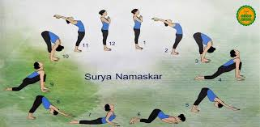

📖 Origin & Significance
Surya Namaskar (Sun Salutation) is an ancient yogic practice dedicated to the Sun God,
considered the source of life and energy in Indian tradition.
It consists of a flowing sequence of 12 yoga postures performed rhythmically with the breath.
Practiced at sunrise, it energizes the body, sharpens the mind, and uplifts the spirit.
💡 Did You Know?
🌞 Surya Namaskar is a full-body workout, improving strength, flexibility, and stamina.
🧘♂️ Each of the 12 poses has a mantra dedicated to the Sun.
⏱️ Just 12 rounds equal nearly 288 yoga postures in one session!
❤️ It improves blood circulation, metabolism, and heart health.
🔮 12 Steps of Surya Namaskar
1. Pranamasana – Prayer Pose
2. Hastauttanasana – Raised Arms Pose
3. Hasta Padasana – Hand to Foot Pose
4. Ashwa Sanchalanasana – Equestrian Pose
5. Dandasana – Stick Pose
6. Ashtanga Namaskara – Eight-Limbed Salute
7. Bhujangasana – Cobra Pose
8. Adho Mukha Svanasana – Downward Dog
9. Ashwa Sanchalanasana – Equestrian Pose (other leg)
10. Hasta Padasana – Hand to Foot Pose
11. Hastauttanasana – Raised Arms Pose
12. Pranamasana – Prayer Pose
🎯 Quick Quiz:
How many poses make up one round of Surya Namaskar?